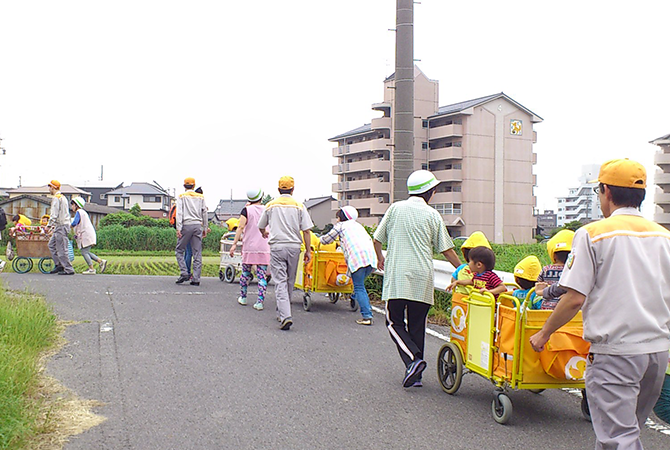
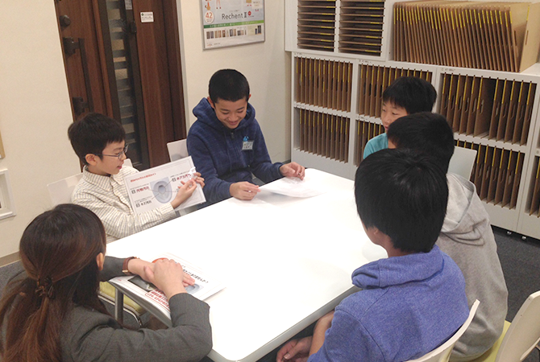

LIXILグループの各拠点では、様々な形でステークホルダーと協働しています。地域の一員として求められていることに対してコミュニケーションを重ね、貢献していくことで、地域の皆様にも喜ばれています。
ここでは、中四国地域で展開している観光地トイレの清掃や、茨城支店で行った「地域との対話」での要望を受けて実現した活動、半田工場や新潟支店で継続して行っている活動を紹介します。
中四国地域の8支店各営業所では、中四国地域を代表する観光名所24エリアの公共施設のトイレを清掃する活動「中四国観光地トイレ おもてなし一斉清掃」を2017年9月4日に実施しました。
今年で4年目となる活動ですが、トイレを扱う企業として、近年、多くの人々が訪れる観光地を清潔にしてお迎えしたいという思いで活動しており、社外にも共感が広がっています。
総勢1,134名で実施しましたが、そのうち約4割が建築関係者さまをはじめ、行政や学校等の地域からの協力者です。
香川県では、学校の社会貢献活動の一環として、清掃活動にご賛同いただき、小学生や高校生とトイレ清掃を実施しました。社員の清掃方法の説明に真剣な表情で耳を傾ける子どもたちが印象的でした。
高知県では市役所の皆さんや、地元のプロ野球独立リーグの方々にも清掃活動にご参加いただきました。
各地で訪れる観光客の方々に興味を持っていただき、「ご苦労様」「LIXILさんはこのような活動をされているのですね」などお声掛けいただく場面もありました。
トイレ清掃では便器の裏側や洗面台の下など、目の届かないところまで丁寧に磨き、周辺の草刈りなども行いました。
ビジネスパートナーや学生のみなさんはじめ、地域生活者の皆さんと一緒に汗を流し、ともに気持ち良い達成感を得られました。今後も地域に根差した活動を通じて、社会に貢献していきます。
※この取り組みはユニバーサル社会の実現に向け、清掃活動を通じて"おもてなし"の心を育む内容として、東京2020公認プログラム（街づくり）に認証されています。
また香川県からは、香川県内でのおもてなし清掃活動を含む、一連の活動が高く評価され、「観光香川おもてなし運動県民会議」の会員である行政機関、観光施設、経済団体、住民団体、大学、マスコミ等118団体より推薦のあった約40件の「おもてなし活動」から、「第1回 観光香川おもてなし大賞」を受賞し、香川県知事より表彰を受けました。
2017年2月に開催したコミュニティ・ダイアログをきっかけに、自治会から、地域の防犯と子どもたちの安全安心を目的とした活動の提案がありました。話し合いをすすめ、LIXILの営業車を防犯パトロールカーとして「子どもを守る110番の車」のステッカーを貼ることになりました。
その後、4月24日に水戸ショールームで出陣式を開催しました。式には水戸市長や水戸警察署長、近隣の小中学校の校長先生、住民の方々など約100名が出席しました。全員で子どもたちを守っていくことを宣言し、ステッカーの貼られた営業車に従業員が乗り込み、35台が出陣しました。
不審者などを発見した際、市や警察署に情報提供をしていきます。
LIXILが地域の一員としての活動を通して、地域に根差した企業を目指します。
愛知県半田市にある半田工場は、1964年から操業しており、浴室で使われる水栓金具などを主に製造しています。
半田工場ではこれまで、地域と対話する『コミュニティ・ダイアログ』をはじめ、交通安全の立哨やインターンシップの受け入れ、障がい者雇用や半田市教育委員会のゲストティーチャー制度を利用した出前授業など地域社会との関わりを持ちながら、オープンな工場を目指し活動を継続してきました。
特に、ダイアログで近隣保育園からの「職員が女性ばかりで災害時に避難できるか不安に感じています」という声に応える形ではじまった防災訓練への協力は2017年5月で4回目となります。
「震度7」「津波警報」を想定し、同地区の安藤製作所の皆さんと一緒に、高台の公園まで園児約200名を避難させる合同訓練に4名が参加。今回のメンバーは乳児を含めた訓練は初めてでしたが、暑さのなかで無事に避難を完了しました。
保育園からは「急な坂道を乳児を乗せた乳母車を押して避難するのは女性だけでは難しいため、本当に助かります」とのお声を頂いています。
今回初めて訓練に参加したメンバーからは「実践的な訓練で大変さがよく分かりました。避難する子どもたちを見て責任感も生まれました」との感想が聞かれました。
今後も引き続き、地域との関わりを持つことで社会からの信頼を獲得していきます。
新潟支店は、営業所員80名ほどの中規模の営業拠点です。2007年からショールームとして開設しており、12名のショールームスタッフが工務店や設計者の方、製品を購入予定のお客さまの接客を行っています。
2015年の地域と対話する「コミュニティ・ダイアログ」をきっかけに、地域とコミュニケーションを重ね、その年の11月より近隣の女池小学校6年生を対象とした『職場体験学習』を受け入れ、今回で2回目の実施となります。
ショールームでの開館前の挨拶の練習や清掃、開館中の受付業務やお客さまへの呈茶、商品の模擬提案などを体験してもらいました。
後日、子どもたちからの感想文には「体験してみて、仕事は大変だと思いましたが、笑顔が大切だということがわかりました。」「工夫したところは、(模擬提案で)お客さまにどこを読んでいるか分かるよう指さしを行いました。説明することが苦手でしたが得意になりました。」とあり、対応した従業員も元気をいただきました。
通常ショールームの様子を内側から見ていただくことは殆ど無いため、普段とは違う視点でLIXILを知っていただくことができ、また指導するスタッフにとっても改めて業務を確認する良い機会となりました。
小学生や中学生を対象とした職場体験は他の地域のショールームでも行われていますが、子どもたちが一生懸命取り組む姿勢が従業員にも良い刺激になっています。今後も職場体験を通じて地域に貢献していきます。